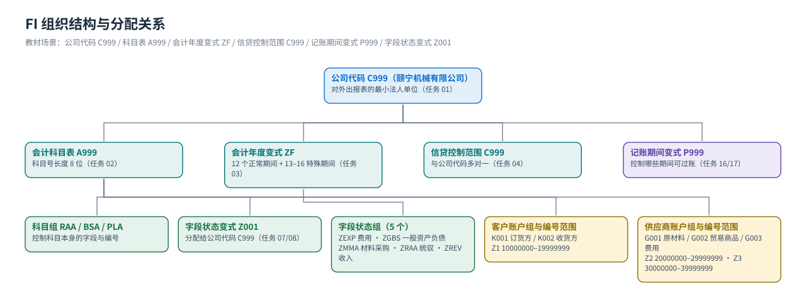
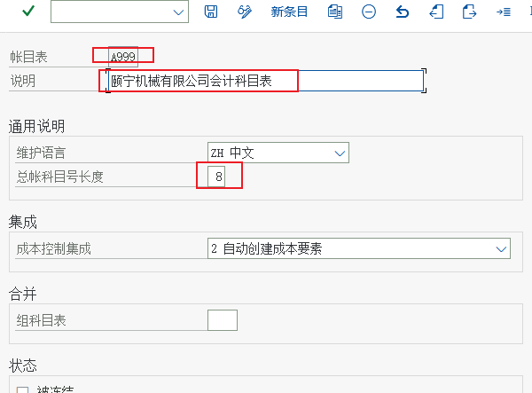
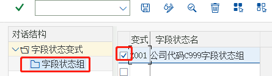

组织结构
公司代码 / 会计科目表 / 会计年度变式 / 信贷控制范围 / 记账期间变式 / 字段状态变式
FI 的组织数据是会计的「坐标系」：公司代码定账套、会计科目表定科目体系、会计年度变式与记账期间变式定时间、信贷控制范围定信用边界、字段状态变式定录入规则。教材 FI 模块的前 5 个任务 + 任务 16–17 全在做这件事，顺序不能颠倒。
组织结构一张图
{kind=link}

六个组织对象（教材任务逐个对上）
| 对象 | 教材任务 | 含义 | 在 FI 里决定什么 |
|---|---|---|---|
公司代码 Company CodeC999 颐宁机械有限公司 | 任务 01 | 对外出具财务报表的最小法人单位（教材建的是颐宁机械有限公司，城市上海） | 会计凭证落在哪套账上；科目余额、报表、期间都按公司代码划分 |
会计科目表 Chart of AccountsA999 | 任务 02 | 一套科目的「目录」，定义科目号长度（教材 8 位）与科目组；可分配给多个公司代码 | 总账科目的科目表层数据（表 SKA1）归属哪个科目表 |
会计年度变式 Fiscal Year VariantZF | 任务 03 | 定义过账期间与特殊期间的数目（教材：12 个正常期间 + 13–16 特殊期间） | 凭证的「期间」怎么算；会计年度是否与自然年一致 |
信贷控制范围 Credit Control AreaC999 颐宁信贷控制范围 | 任务 04 | 信用控制的边界（教材原文：它是销售与应收账款用来控制风险的组织结构，公司代码与信贷控制范围是多对一） | 客户信用额度、销售订单的信用检查（教材未演示具体检查） |
记账期间变式 Posting Period VariantP999 颐宁记账期间变式 | 任务 16/17 | 控制哪些会计期间允许过账（开账/关账），多个公司代码可共用 | 某期间能不能记账；教材任务 18 在前台看/改这个开关 |
字段状态变式 Field Status VariantZ001（公司代码 C999） | 任务 07/08 | 一个变式里含多个字段状态组（教材 ZEXP/ZGBS/ZMMA/ZRAA/ZREV），分配给公司代码 | 科目主数据里的字段状态组从哪来、凭证录入时哪些辅助核算项必输 |
怎么在自己系统里看公司代码：
OX02（或 IMG 企业结构 → 定义 → 财务会计 → 编辑公司代码）；会计科目表：OB13；会计年度变式：OB29；字段状态变式：OBC4；记账期间变式与开关期间：OB52；公司代码全局参数：OBY6。这些事务码只在后台可用，教材里是用 IMG 菜单路径进去的（见 配置篇）。分配关系与基数（背下来这一张）
| 分配关系 | 教材任务 | 基数 | 含义 |
|---|---|---|---|
| 公司代码 → 会计科目表 | 任务 05 | 多对一 | C999 → A999（输入全局参数时把科目表指给公司代码）；一个科目表可服务多个公司代码 |
| 公司代码 → 会计年度变式 | 任务 05 | 多对一 | C999 → ZF；会计年度变式被多个公司代码共用 |
| 公司代码 → 信贷控制范围 | 任务 04/05 | 多对一 | C999 → C999 信贷控制范围；教材原文明确「公司代码和信贷控制范围是多对一关系」 |
| 公司代码 → 记账期间变式 | 任务 17 | 一对一 | 一个公司代码只能有一个记账期间变式（P999），但一个变式可被多个公司代码共用 |
| 公司代码 → 字段状态变式 | 任务 08 | 一对一 | 「向字段状态变式分配公司代码」：C999 → Z001；再往下是科目 → 字段状态组 |
| 科目 → 字段状态组 | 任务 07/08 | 多对一 | 科目 51010101（收入）→ ZREV；科目（统驭类）→ ZRAA；材料采购科目 → ZMMA |
| 客户/供应商 → 统驭科目 | 任务 11/29/31 | 多对一 | 所有客户明细汇总到 11310101 应收账款、供应商汇总到 21210101 应付账款 |
为什么教材要「先建对象、再分配」
FI 的每个前台动作都要读这些参数：录凭证要读字段状态变式（哪些字段必输）、过账要读记账期间变式（这个期间开没开）、跑报表要读会计科目表（科目范围怎么划）。所以教材的顺序是：任务 01–05 建对象并分配到公司代码 → 任务 06–09 准备科目体系 → 任务 10–13 建科目 → 任务 15–19 再回到凭证与期间控制。
跳过任何一步，后面的报错都会「看起来莫名其妙」：例如没有科目表 / 公司代码就进不了 FS00，没有字段状态变式 FS00 里就没有字段状态组可输。
组织数据决定了什么（课堂上常被问的六个问题）
| 问题 | 答案由谁决定 |
|---|---|
| 这张凭证记在哪套账上？ | 公司代码（C999）；录凭证时抬头可以切换公司代码 |
| 科目号能有多长、属于哪一类？ | 会计科目表 A999 的科目号长度（8 位）+ 科目组（RAA/BSA/PLA…） |
| 这个月还能不能记账？ | 记账期间变式 P999 + 前台期间开关（任务 18，画面 +/A/D/K/K 控制） |
| 科目主数据哪些字段必须填？ | 公司代码的字段状态变式 Z001 → 科目的字段状态组（ZEXP/ZGBS/ZMMA/ZRAA/ZREV） |
| 客户能不能赊销、能欠多少？ | 信贷控制范围 C999 + 客户主数据的信用数据（教材未演示信用检查） |
| 会计年度是怎么切的？ | 会计年度变式 ZF（12 个正常期间 + 4 个特殊期间） |
教材画面（组织与全局参数）

{kind=link}



{kind=link}
